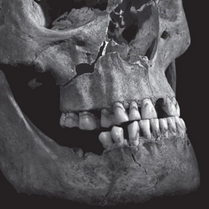

Latest News
Click here to see all news and events.
50% discount on tuition fees for
postgraduate taught courses
We have a launched a new Graduate
Scholarship offering a 50% discount on tuition fees for
postgraduate taught courses (Masters, Postgraduate Diploma or
Postgraduate Certificate). The scholarship will be awarded to Home/
EU students who graduate with a 2.1 or above at the end of the
2014-5 academic year.

The Petal and the Wire’ brings the
voices of Leicester WWI veterans to life
The University of Leicester, formerly
the 5th Northern General Hospital, will feature prominently in a
new oral history project based on the surrounding county during
WWI.

National Centre for Earth
Observation receives £23m investment for world-class environmental
science
Professor John Remedios, Head of Earth
Observation Science, has been appointed Director of the NCEO and
will oversee a newly announced £23m funding contract.

First potential direct detection of
Dark Matter revealed
A paper originally led by the late
Professor George Fraser has revealed the first potential direct
detection and identification of Dark Matter.
Time Higher Education ranks
Leicester among world’s top 200 universities
The University has once again been
ranked as one of the top 200 universities in the world in a
prestigious league table compiled by the Times Higher Education.

University of Leicester
archaeologists discover bronze remains of Iron Age Chariot
A team of archaeologists have uncovered
a matching set of decorated bronze parts from a 2nd/ 3rd century BC
Celtic chariot at Burrough Hill Iron Age hillfort.
Leicester renal research receives
over £400,000 from Kidney Research UK
Kidney Research UK, the largest funder
dedicated to kidney research in the UK, has invested £416,511 into
renal research at the University of Leicester.
DNA fingerprinting drama casts role
of Sir Alec Jeffreys
John Simm cast as Sir Alec Jeffreys in
forthcoming drama, Code of a Killer.
Welcome to Leicester
Find out everything you need to prepare
for your first weeks at Leicester and the support available to you.

Knitting Flanders Field
Public welcome to get involved with our
knitted poppies display which will be on University grounds as part
of our WWI centenary commemorations.

Most likely cause of King Richard
III’s death identified
New research led by Leicester
scientists gives a blow-by-blow account of the injuries inflicted
on King Richard III’s body at the Battle of Bosworth Field on 22
August, 1485.
2015 Undergraduate Prospectus
For the latest information on our
courses, student life, accommodation, fees and scholarships order
your 2015 Undergraduate Prospectus today.